Asistencia mecánica
Mecánicos con mucha experiencia en competición que mantienen el coche en su mejor estado, buscan la máxima fiabilidad y reaccionan rápido ante cualquier imprevisto.
Equipo de rallies con asistencia mecánica, ingeniería y logística bajo un mismo techo. Del primer test a la última especial, tu coche llega a punto y tú llegas tranquilo.
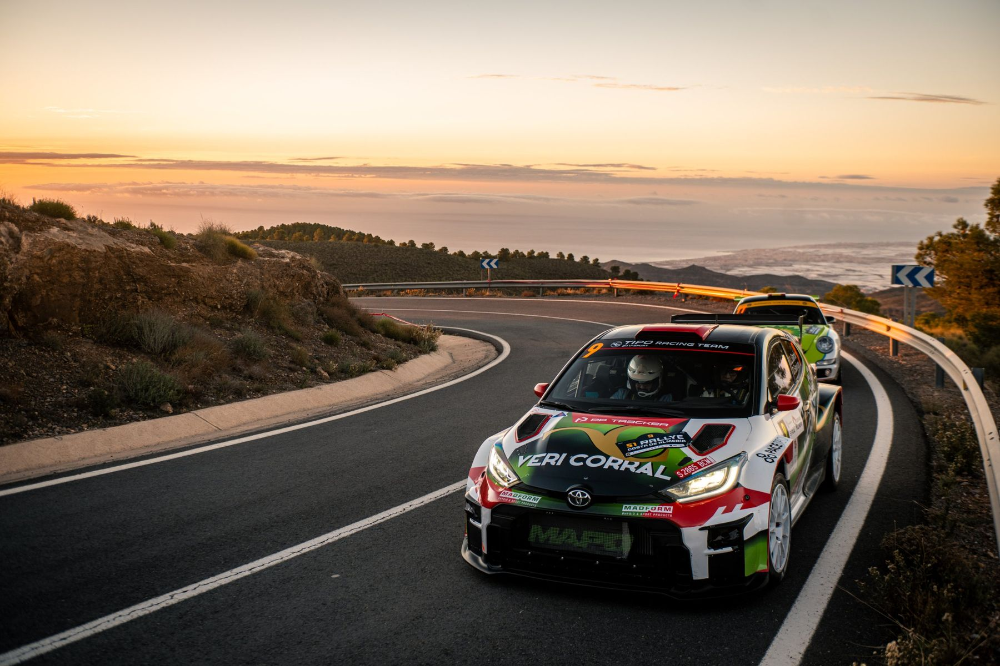
Atención al detalle y calidad en cada rally.
MAPO Motorsport nace en 2021 de la mano de Xevi Pons: campeón del mundo de S2000, vencedor de numerosos campeonatos nacionales, piloto del Dakar y formador de pilotos en la Xevi Pons Rally Academy.
Esa experiencia se traduce en un servicio completo para el piloto: mecánica, ingeniería y logística resueltas por un mismo equipo, con un único interlocutor y respuestas rápidas cuando el reloj aprieta.
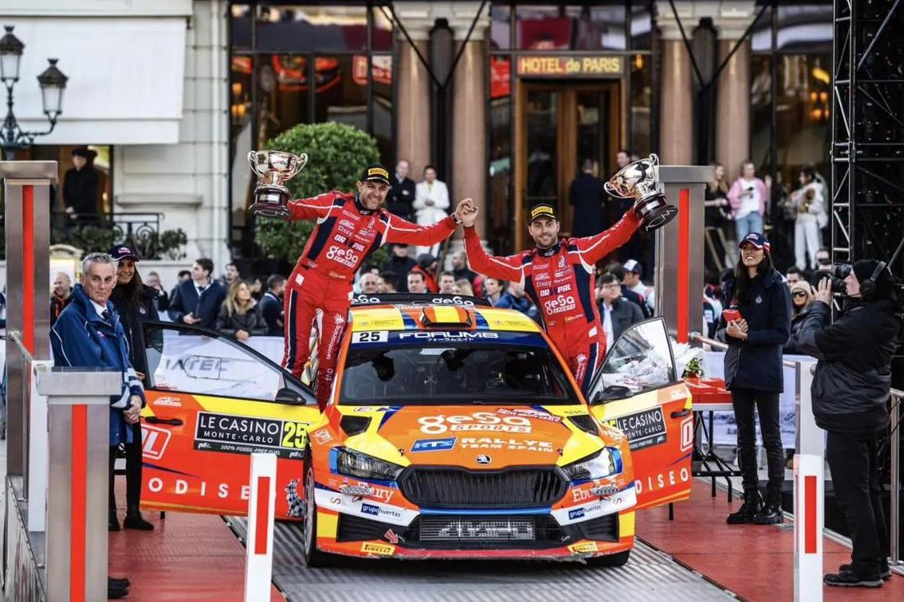
Todo lo que necesita un programa de rallies, sin que tengas que coordinar a nadie más.
Mecánicos con mucha experiencia en competición que mantienen el coche en su mejor estado, buscan la máxima fiabilidad y reaccionan rápido ante cualquier imprevisto.
Escuchamos tus sensaciones tras cada tramo y ajustamos el coche para que responda como tú quieres. Te aconsejamos para exprimir cada evento.
Nos encargamos de que el coche, el material y el equipo técnico lleguen a cada rally a tiempo, para que tú solo pienses en conducir.
Los resultados fuera del tramo también cuentan. Te ayudamos con tu imagen, tu dossier de piloto y la búsqueda de patrocinadores.
Un buen rally es un coche rápido y también un buen ambiente en la asistencia. Incluimos catering durante el evento y seguimiento en redes sociales de la prueba. En las citas del WRC, además, te acompañamos con un servicio de reconocimientos.
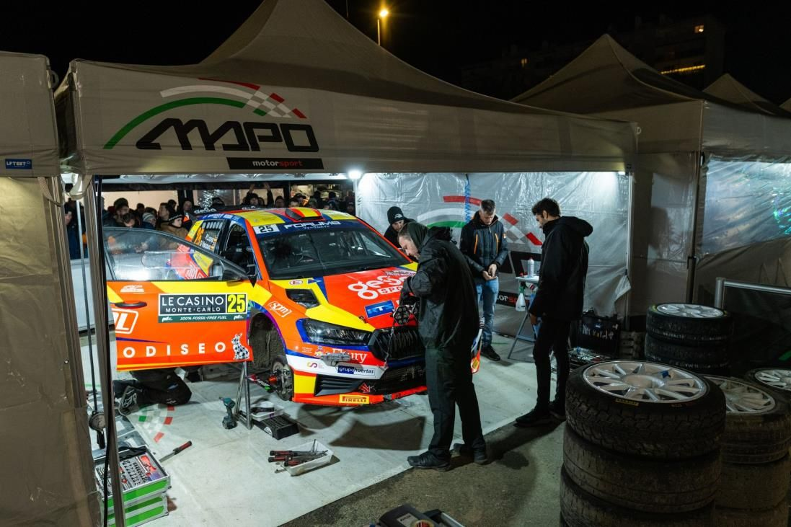
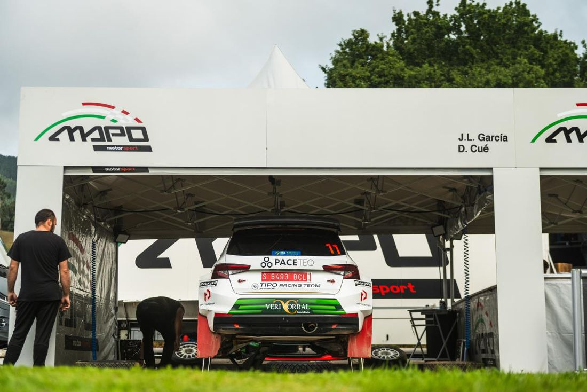
Orden y claridad: sabes en todo momento en qué estado está tu coche y qué se ha hecho en él.
Durante cada prueba y al terminarla, el coche se revisa entero, sin dejar nada para luego.
Controlamos cada pieza y su desgaste y lo dejamos anotado, para anticiparnos a los problemas antes de que aparezcan.
Organizamos jornadas de test y coaching antes del rally, porque cada kilómetro previo vale oro cuando empieza a correr el cronómetro.
Como opción, te asesoramos en imagen, portfolio y patrocinio para que tu proyecto crezca también fuera de los tramos.
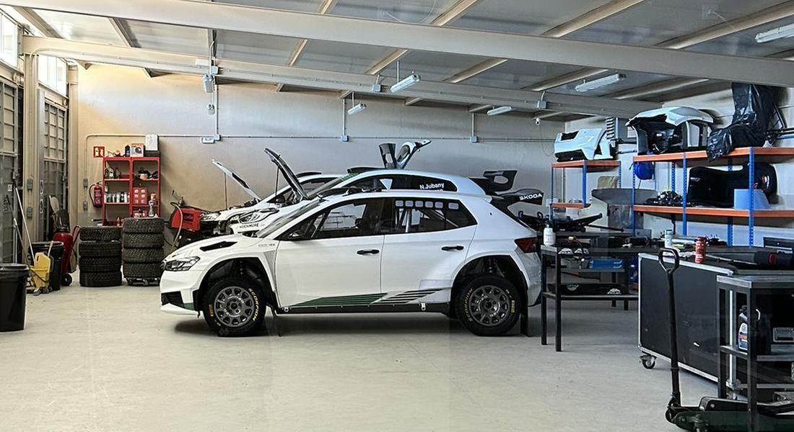
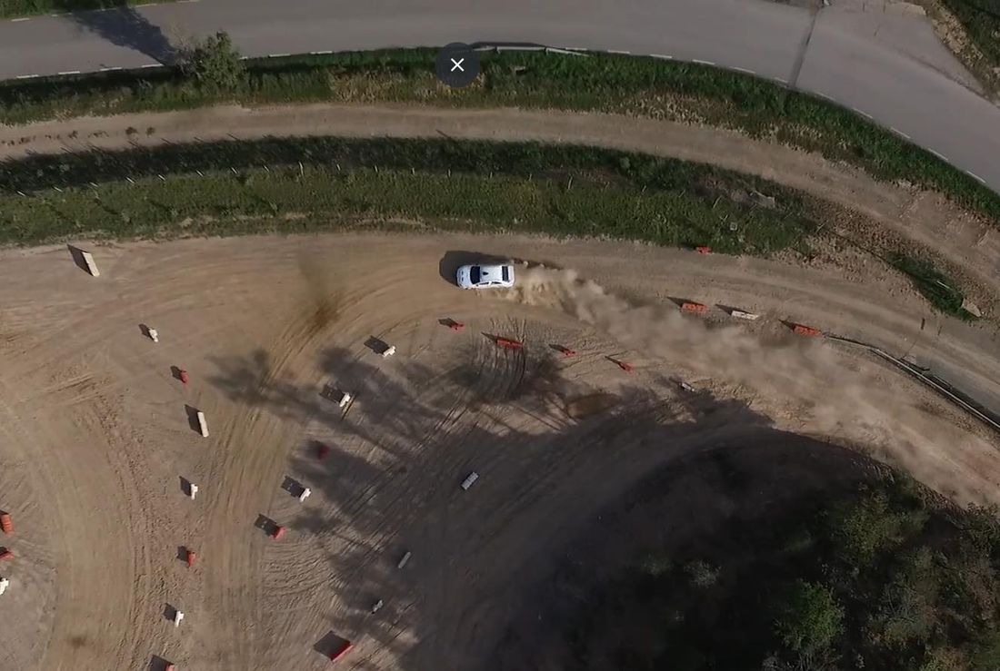
Coaching de pilotos de la mano de Xevi Pons, para mejorar tu técnica y llegar a cada rally con el trabajo hecho.
Nuestro circuito propio, pensado para rodar con la máxima seguridad. Ofrece muchas variantes y trazados, todos muy técnicos, para adaptar cada jornada a lo que necesites. Abierto desde 2012, cuenta con todos los permisos y homologaciones ambientales, y su explanada de pruebas y el paddock lo convierten en el lugar ideal para cualquier tipo de test.
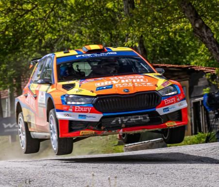
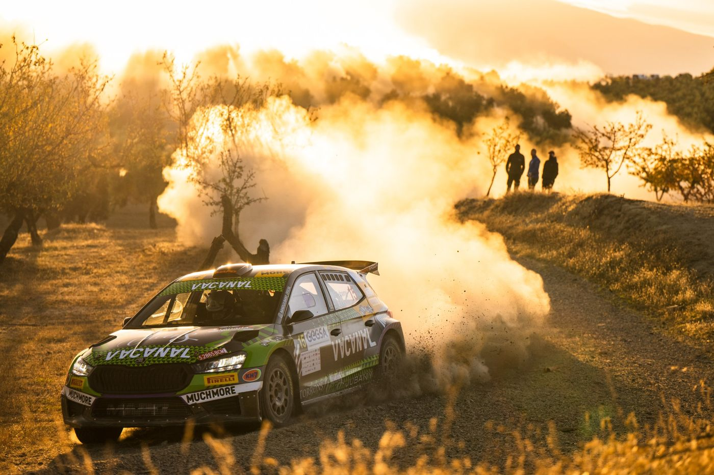
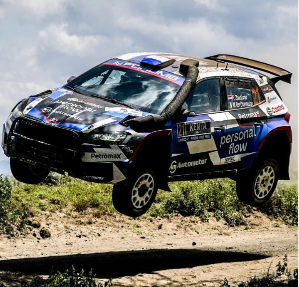
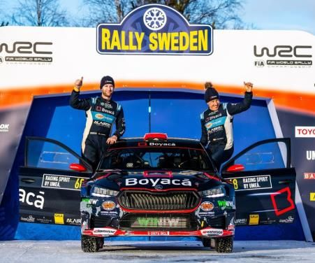
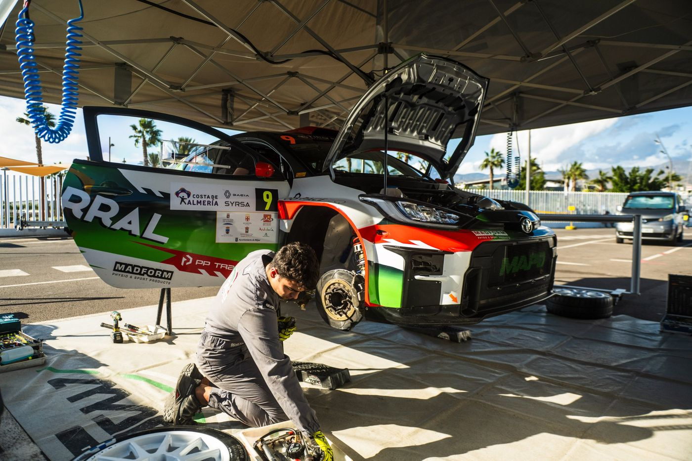
Cuéntanos qué coche llevas, qué campeonato quieres correr y qué necesitas. Te respondemos con una propuesta a tu medida.